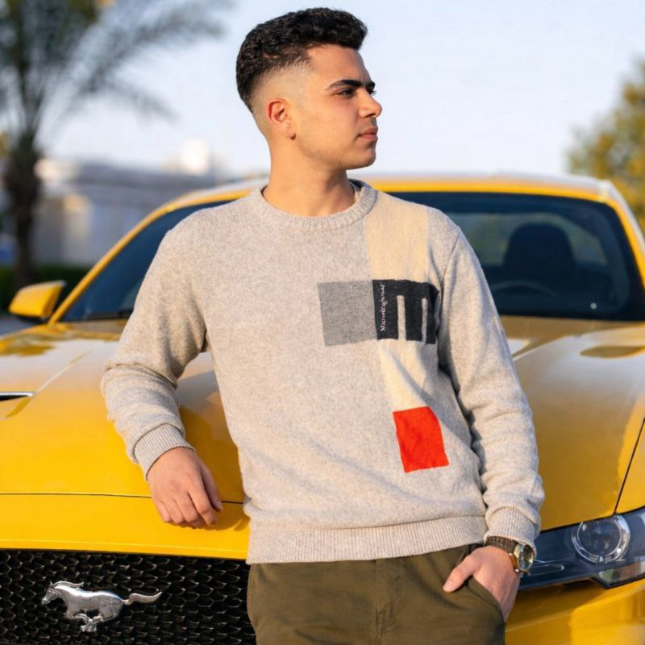
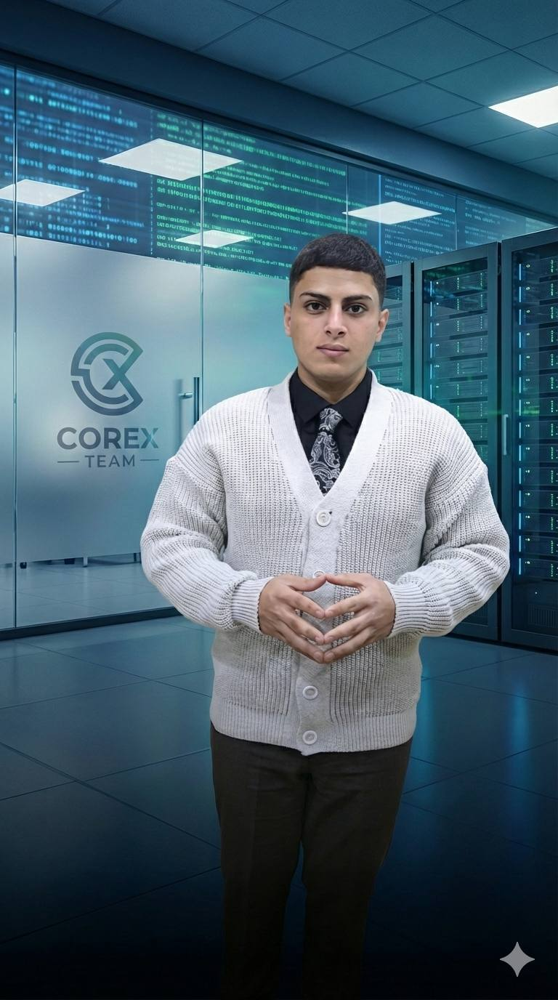
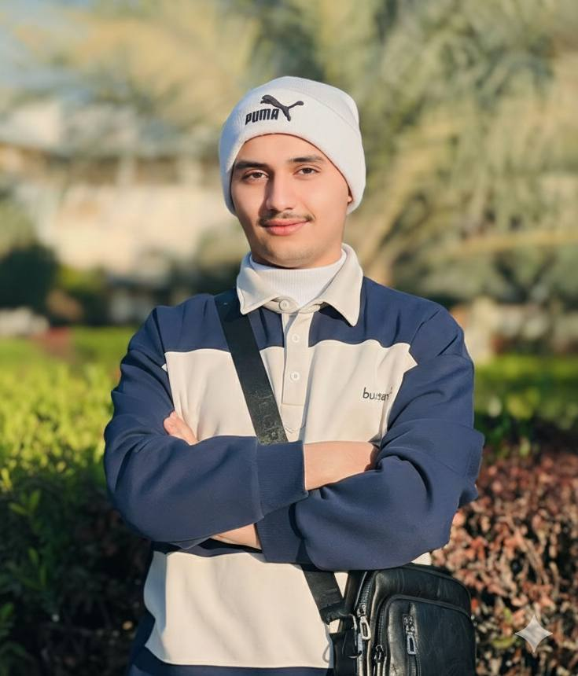
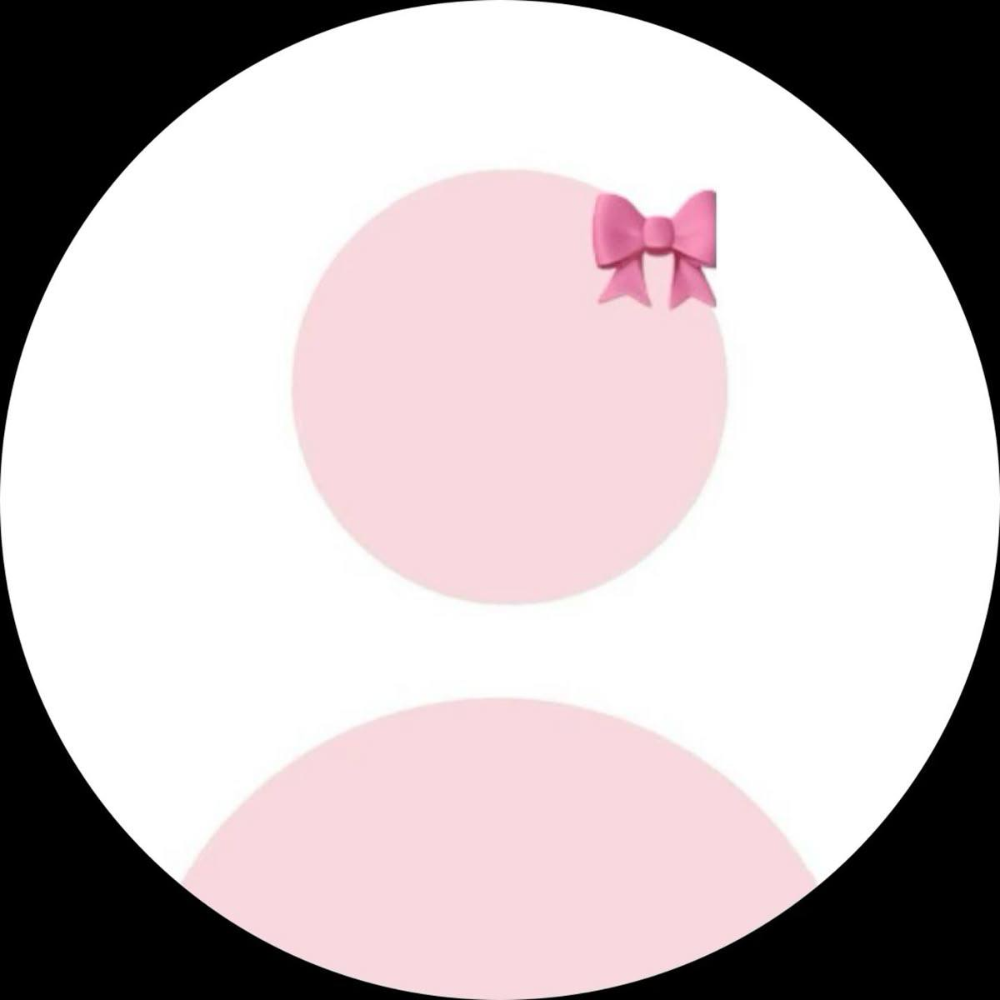
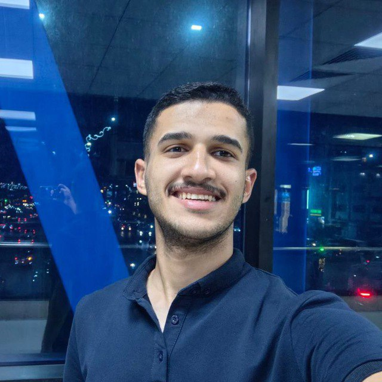
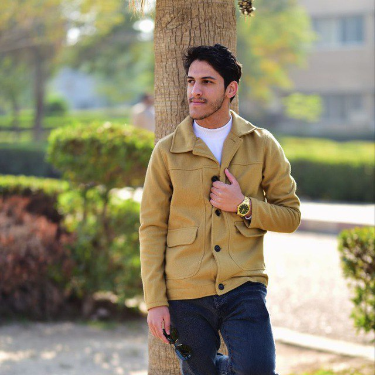
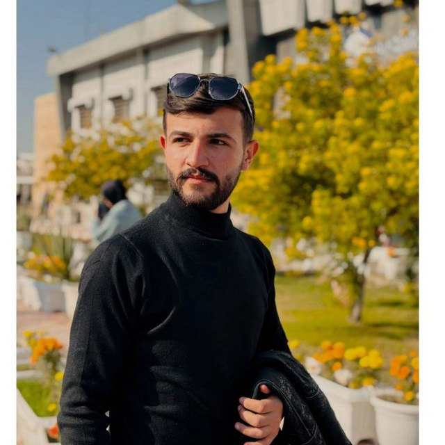
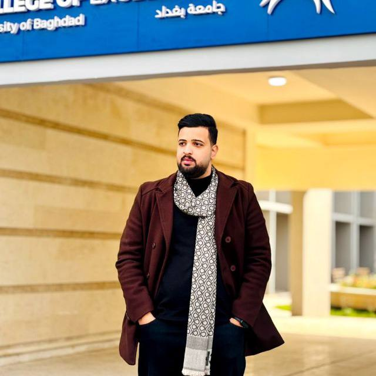

Team members
سجاد رياض جدوع
Leader
Cyber security

كرار عبد الكريم اسعد
CO-Leader
Cyber security

عبدالله حسين غازي
Cyber security

سيف رياض جدوع
Cyber security

تبارك حمزه حمود
Cyber security

كرار حيدر كاظم
Cyber security
حسين احمد كاظم
Cyber security
يوسف الموسوي
Cyber security
علي راضي
network

محمد امير
network

محمد موسى
network

عبدلله خالد
network

عادل ازهر خليل
network
Organizing Committee
عبدالله حسين غازي
Chairman of the Committee
سيف رياض جدوع
Coordination Officer
سجاد رياض جدوع
Committee member
كرار عبد الكريم اسعد
Committee member
CoreX Specialties
Technical development
Building software solutions and websites using the latest technologies
Creative design
Creating visual identities and logos that reflect the team's strength
Planning and management
Organizing projects and tournaments with high professionalism
Team skills
Data analysis
Cinematic montage
Information security
Team news
Workshop: Zuro trust
A special workshop will be held for team members led by Team CoreX.
Interviewer: Explaining the team structure, distributing tasks, and starting work on the first project.
📍 Location: College of Information Technology, Conference Hall
Connect with CoreX
Our official channels
.We are available 24 hours a day to answer your questions